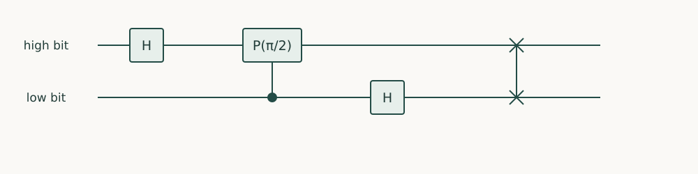

Quantum Algorithms · Chapter 4 · Draft lesson
Fourier Methods
How does a repeated pattern become a measurable frequency?
Chapter direction
Starting point: Chapters 2–3; modular arithmetic and Fourier mathematics are developed in this chapter.
Anchor example: A periodic amplitude pattern on an eight-label register.
This lesson includes explanations, worked examples, and problems with solutions. Advanced results whose proofs are outside the chapter are identified explicitly.
4.1 The Fourier Transform
Consider a register whose amplitudes repeat every two positions. Reading one position does not announce that period. We need a change of basis in which repeated patterns reinforce particular frequencies.
4.1.1 Roots of unity and cancellation
Let \(\omega=e^{2\pi i/N}\). Its powers are equally spaced points on the unit circle. For an integer \(k\) not divisible by \(N\), the sum \(1+\omega^k+\cdots+\omega^{(N-1)k}\) is zero: multiplying by \(1-\omega^k\) telescopes to \(1-\omega^{Nk}=0\). Define
\[F_N\ket x=\frac1{\sqrt N}\sum_{y=0}^{N-1}e^{2\pi ixy/N}\ket y.\]
The cancellation identity makes its columns orthonormal, hence the transform is unitary. For \(N=8\), the state \((\ket0+\ket2+\ket4+\ket6)/2\) becomes \((\ket0+\ket4)/\sqrt2\). Four regularly spaced positions become two regularly spaced frequencies. An offset of the original positions changes phases but not these probabilities.
4.1.2 Circuit construction and approximation
For \(N=2^m\), write the input in bits. The phase \(e^{2\pi ixy/2^m}\) splits into a product of phases associated with the output bits. This gives a circuit of Hadamards and controlled phase gates \(P(\theta)=\mathrm{diag}(1,e^{i\theta})\), followed by swaps that restore bit order. In a two-qubit register with the high bit drawn first, apply H to the high bit, controlled-\(P(\pi/2)\) between the bits, H to the low bit, then swap. This implements the positive-sign convention above. Its inverse reverses the gates and phase signs.
The exact construction has order \(m^2\) gates. Dropping rotations with small angles gives an approximation: each omitted controlled phase changes the operator by norm at most its angle magnitude, and the total error is at most their sum. Gate-synthesis precision must be charged in addition. An efficient transform does not efficiently print all \(2^m\) Fourier coefficients.
Problem 4.1. What does \(F_8\) do to \((\ket1+\ket3+\ket5+\ket7)/2\)?
Worked solution
Its only nonzero amplitudes are \(1/\sqrt2\) at zero and \(-1/\sqrt2\) at four. The shift multiplies frequency \(y\) by \(e^{2\pi iy/8}\).

4.2 Phase Estimation
4.2.1 Controlled powers and phase kickback
Suppose \(U\ket u=e^{2\pi i\phi}\ket u\) and a preparation of \(\ket u\) is supplied. A uniform control register followed by controlled powers produces \(2^{-m/2}\sum_{k=0}^{2^m-1}e^{2\pi i k\phi}\ket k\ket u\). Apply \(F_{2^m}^{\dagger}\) to the controls. If \(\phi=j/2^m\), cancellation leaves exactly \(\ket j\). Thus phase estimation combines kickback with inverse Fourier readout; it is not an independent miracle.
4.2.2 Resolution, readout, and success probability
For a general phase, the amplitude at \(j\) is \(a_j=2^{-m}\sum_{k=0}^{2^m-1}e^{2\pi i k(\phi-j/2^m)}\). Put \(M=2^m\) and \(\Delta=\phi-j/M\). Summing the geometric series gives \(|a_j|^2=\sin^2(\pi M\Delta)/(M^2\sin^2(\pi\Delta))\), with the continuous limiting value when the denominator vanishes. A nearest grid point has probability at least \(4/\pi^2\). Extra precision bits and suitable repetitions improve confidence. Controlled powers implemented by repeated calls require \(M-1\) uses of controlled-U: resolving phase more finely has a real cost. On a superposition of eigenstates, the output samples their phases with weights given by squared overlaps.
Problem 4.2. With three control bits and \(\phi=3/8\), what is the result, and how many base controlled-U calls are needed by repetition?
Worked solution
The output is the integer 3, bit string 011 when written high bit first. Powers 1, 2, and 4 cost seven base calls. Counting three controlled-power boxes as three base queries would be incorrect.
4.3 Algebraic Algorithms
4.3.1 Period finding and order finding
For an exactly periodic function on \(N\) labels with period \(r\mid N\) and distinct values on different residue classes, coherent evaluation followed by measurement of the function register leaves a uniform residue class \(x_0,x_0+r,\ldots\). The Fourier transform has support only at multiples of \(N/r\). If the function has additional collisions, that residue-class argument needs modification. If \(r\) does not divide \(N\), peaks broaden rather than landing exactly on integer frequencies.
4.3.2 Factoring and hidden subgroup structure
Order finding uses \(f(x)=a^x\bmod L\) for \(a\) coprime to the integer \(L\). From sufficiently accurate frequency samples, continued fractions recover candidate fractions \(s/r\); verify candidate orders by modular exponentiation and repeat when the numerator hides a common factor. The reversible arithmetic and classical reconstruction are part of the algorithm. If an obtained order \(r\) is even and \(a^{r/2}\not\equiv-1\pmod L\), then \(\gcd(a^{r/2}\pm1,L)\) can yield nontrivial factors. For \(L=15,a=2\), \(r=4\) gives factors \(\gcd(3,15)=3\) and \(\gcd(5,15)=5\). This example checks the reduction, not its general success analysis. Abelian hidden-subgroup algorithms generalize the idea of Fourier sampling a coset; a Fourier transform alone does not solve arbitrary nonabelian hidden-subgroup problems.
Problem 4.3. Why is the factoring reduction unsuccessful for \(a=14,L=15\)?
Worked solution
The order is two and \(a^{r/2}\equiv-1\pmod{15}\). The two gcds are 1 and 15, so the trial provides no nontrivial factor. A reduction must specify failed trials and repetition.
Frequency readout can estimate useful quantities, but useful outcomes may still have small probability. The next chapter makes their amplitudes larger.
Sources and further study: Shor, Polynomial-Time Algorithms for Prime Factorization and Discrete Logarithms.